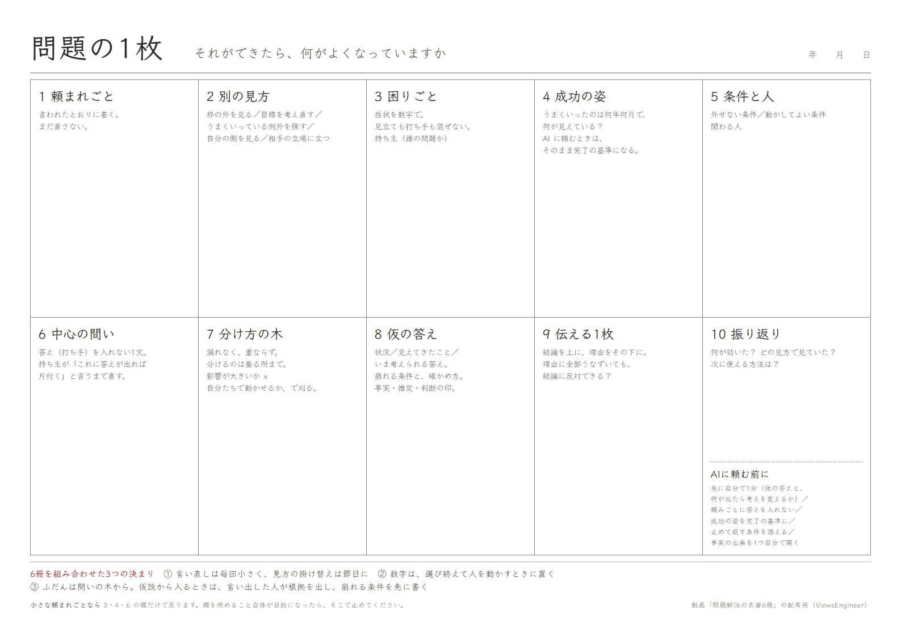
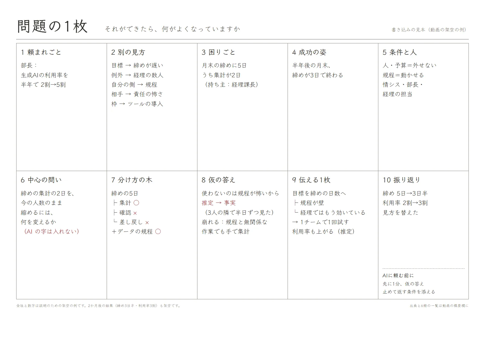

問題の1枚
問題解決の名著6冊を突き合わせた動画で、机の上で埋めていった A3 の紙です。
PDF をダウンロード（A3 横・2ページ）1ページ目が書き込み用、2ページ目が動画の例を書き込んだ見本です。
頼まれたら、その場で1回だけ聞く。
それができたら、何がよくなっていますか。
6冊を組み合わせた3つの決まり
- 言い直しは毎回小さく、見方の掛け替えは節目に
- 数字は、選び終えて人を動かすときに置く
- ふだんは問いの木から。仮説から入るときは、言い出した人が根拠を出し、崩れる条件を先に書く


動画
目次、6冊の原書と邦訳、本の外で確かめた資料は、動画の概要欄にあります。
記事でも書きました: note（仕事を頼まれた直後の1分で、やることが変わる）／Qiita（AI エージェントに調べ物を任せるときの確かめ方）
取り上げた6冊
- ジョージ・ポリア『いかにして問題をとくか』（How to Solve It, 1945）
- バーバラ・ミント『考える技術・書く技術』（The Pyramid Principle）
- チャールズ・コン、ロバート・マクリーン『完全無欠の問題解決』（Bulletproof Problem Solving, 2018）
- ギャレット、フェルプス、シボニー『Cracked It!』（2018。邦訳は見つかりませんでした、2026年11月時点）
- トーマス・ウェデル＝ウェデルスボルグ『解決できない問題を、解決できる問題に変える思考法』（What's Your Problem?, 2020）
- クキエ、マイヤー＝ショーンベルガー、ド・ベリクール『意思決定の質を高める「フレーミング」の力』（Framers, 2021）